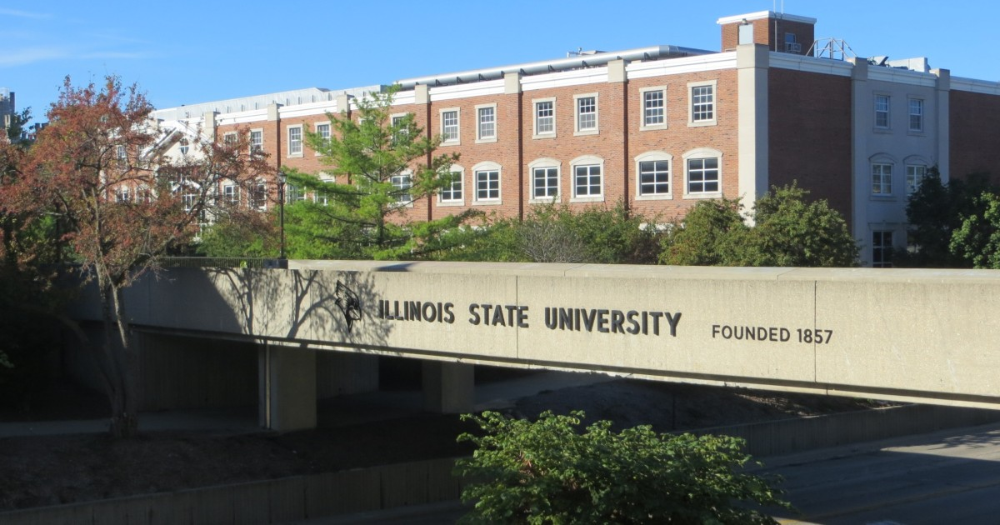

[HOME]
[REQUIREMENTS]
[CLASSES]
MAJOR IN CREATIVE TECHNOLOGIES
The major in Creative Technologies is an interdisciplinary program in the College of Fine Arts that emphasizes theory, design, and practice in the application of computer technology to art, music, and theatre and dance. The degree provides undergraduate training and experiences in creative technologies to better prepare students with a broad range of knowledge and skills in multimedia design, including digital video and sound, computer graphics and theatre design, digital and MIDI music, and Web design.

Admission and Retention Requirements:
All students must undergo a portfolio review and/or an interview with the Creative Technologies Admissions Committee before being admitted into the program. The Committee will evaluate admission requests from new beginning freshman, new transfer students, and internal transfers. The Creative Technologies program reserves the right to maintain a balanced enrollment and the number of students wishing to enter the Creative Technologies program may be restricted.
Students will be allowed to continue in the Creative Technologies program who have met and continue to maintain a cumulative GPA of 2.50 and have demonstrated competency through an intermediate portfolio review.